Onde tudo era instável
Nem todo caminho começa em terreno firme.
Cresci entre casas, parentes e ausências.
Aprendi cedo a me adaptar,
mas ainda não sabia onde pertencer.
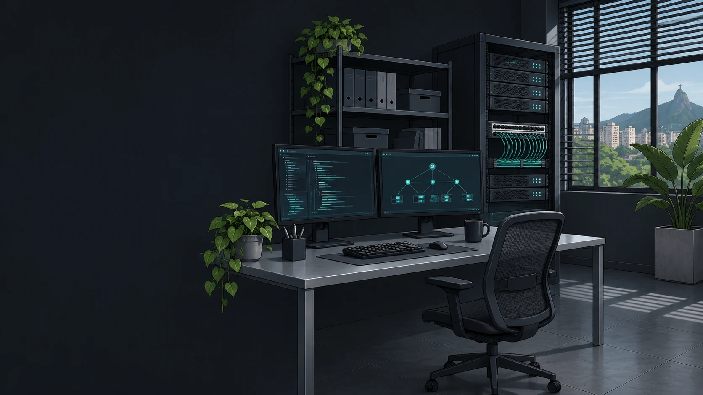
Desenvolvo sites, sistemas web e automações. Conecto APIs, organizo processos e cuido da infraestrutura que mantém tudo funcionando.
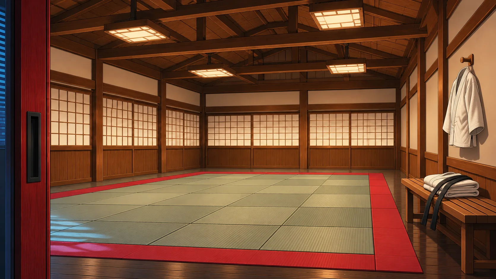
Atuo como árbitro e atleta. Treino na Equipe de Judô da Prefeitura de Piraí e, no momento, não estou dando aulas.
Nem todo caminho começa em terreno firme.
Cresci entre casas, parentes e ausências.
Aprendi cedo a me adaptar,
mas ainda não sabia onde pertencer.
Aos 8 anos, o judô entrou na minha vida.
Não como um sonho,
mas como uma possibilidade.
Sempre fui pacífico.
O judô me ensinou ordem, limite
e respeito quando tudo parecia disperso.
Aos 12 anos, fui afastado do judô.
Um erro.
Justamente o que me mantinha alinhado
foi retirado de mim.
Aos 15 anos, retornei.
Outra cidade. Outro sensei.
Competição, pertencimento
e acolhimento.
A faixa marrom veio acompanhada
da primeira grande lesão.
Medo, dor
e a decisão de continuar.
A vida trouxe mudanças.
Outro lugar. Outro dojô.
Um novo pilar no caminho.
Ensinar passou a ser a forma
de devolver tudo o que recebi.
O judô deixou de ser prática.
Tornou-se propósito.
Hoje, sigo como árbitro e atleta.
Treino na Equipe de Judô da Prefeitura de Piraí.
O que aprendi ensinando permanece comigo.
Referências que formaram meu caráter e inspiram meu caminho no judô.
Essa seção não é ranking nem exibição: é reconhecimento público de legado. Quem forma um sensei também faz parte do que ele se torna.
Estes senseis não apenas ensinaram judô. Eles estiveram presentes quando a vida exigiu mais do que técnica. Minha gratidão é eterna.
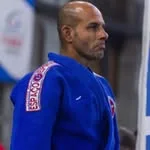
Gratidão por ter acreditado, acolhido e ensinado quando eu mais precisei. Parte do que sou no tatame vem do que aprendi com você.
@sensei.claudioleonardoObrigado por confiar, orientar e abrir caminhos. Ensinar se tornou propósito a partir do que aprendi ao seu lado.
@judoclubesoleraAlém daqueles que caminharam comigo, há senseis que me inspiram pela postura, pelo ensino e pela forma como representam o judô.
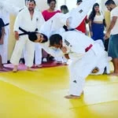
Inspiração pela postura, pelo respeito ao judô e pelo compromisso com a formação humana.
@deridesdecastroInspiração pela postura, pelo respeito ao judô e pelo compromisso com a formação humana.
@heliodeooliveiraazho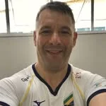
Inspiração pela postura, pelo respeito ao judô e pelo compromisso com a formação humana.
@alexandrexrcunhaSigo o legado daqueles que me ensinaram pelo exemplo. Tudo o que faço no tatame é uma tentativa de honrar o que recebi: a forma de ensinar, de ouvir e de cuidar dos alunos. Se algo permanece no meu judô, é porque primeiro foi vivido por eles.
Minha trajetória como professor começa em 2017, dando forma a uma história construída com responsabilidade, compromisso e o desejo de ensinar como aprendi.
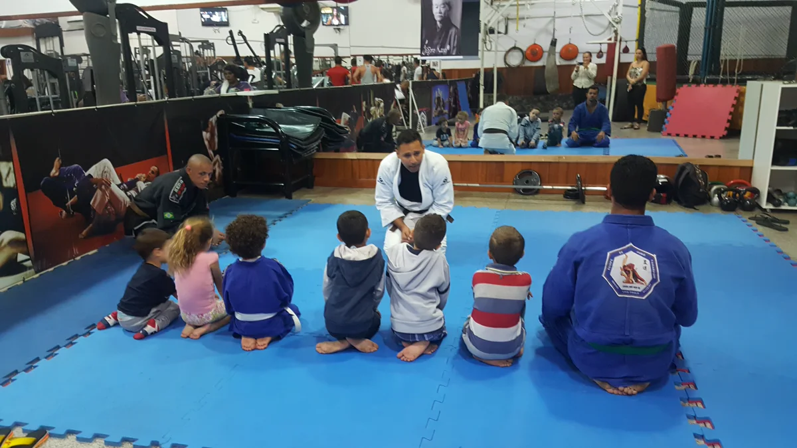
Em 2017 iniciei meu trabalho como professor de judô na academia MrFit. Naquele momento, ainda faixa marrom, o medo e a insegurança estavam presentes. Mesmo assim, segui com o respaldo e a confiança do meu professor para conduzir aqueles alunos. Desde o início, meu compromisso foi oferecer um ensino sério, responsável e respeitoso, priorizando a formação humana antes de qualquer resultado.
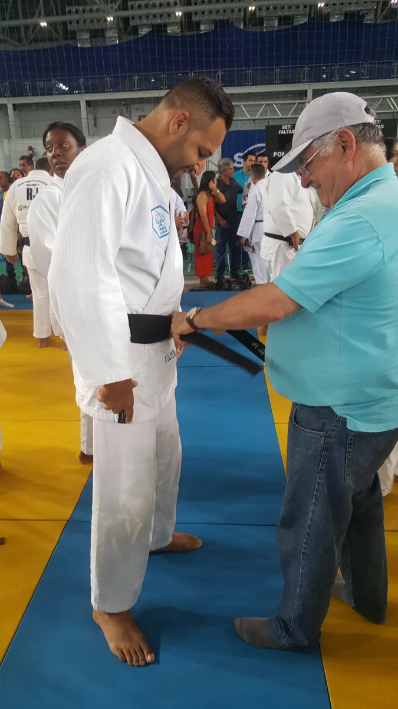
Em 2018 veio a graduação à faixa preta, marcando uma nova etapa de responsabilidade no ensino. Nesse mesmo período, passamos para um novo dojô. Um espaço menor, simples, mas cheio de esperança, onde o trabalho continuou a se estruturar com base na disciplina, na constância e no cuidado com os alunos.
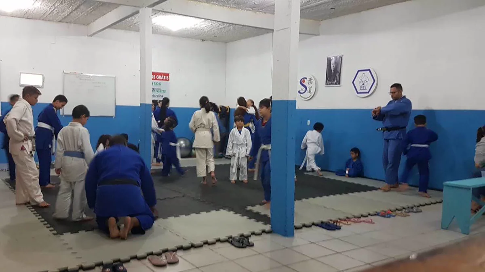
Em 2019 houve a expansão para um dojô maior, reflexo da evolução do trabalho e da confiança construída com os alunos e famílias. Pouco tempo depois, fomos surpreendidos pela pandemia, que interrompeu treinos, rotinas e planos, exigindo paciência, adaptação e resiliência.
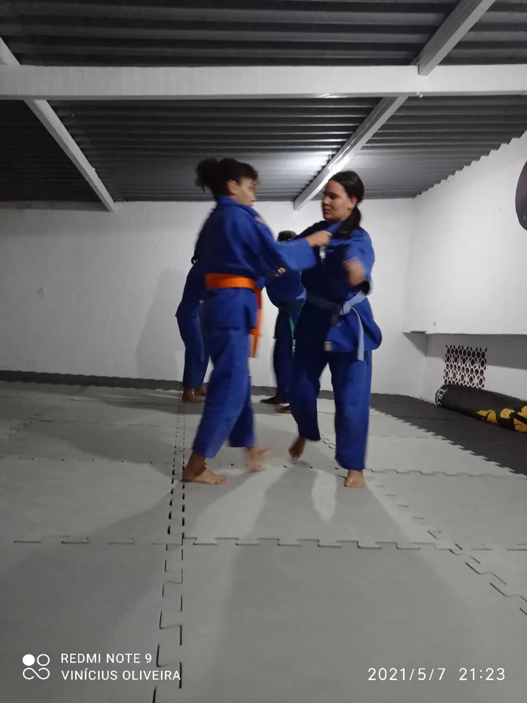
Após o período mais crítico da pandemia, em 2021 retomamos as atividades de forma gradual, inicialmente no teto da minha própria casa. Com o tempo, conseguimos avançar para um espaço ainda maior, reafirmando que o judô não depende apenas de estrutura, mas de compromisso e continuidade.
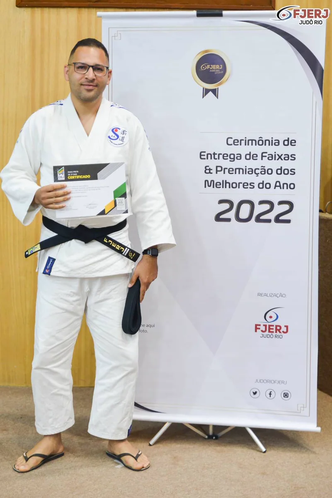
Em 2022 recebi a graduação ao 2º Dan, um marco que representou amadurecimento técnico e pedagógico. Esse momento reforçou minha responsabilidade como professor e formador, consolidando valores que busco transmitir diariamente no tatame.
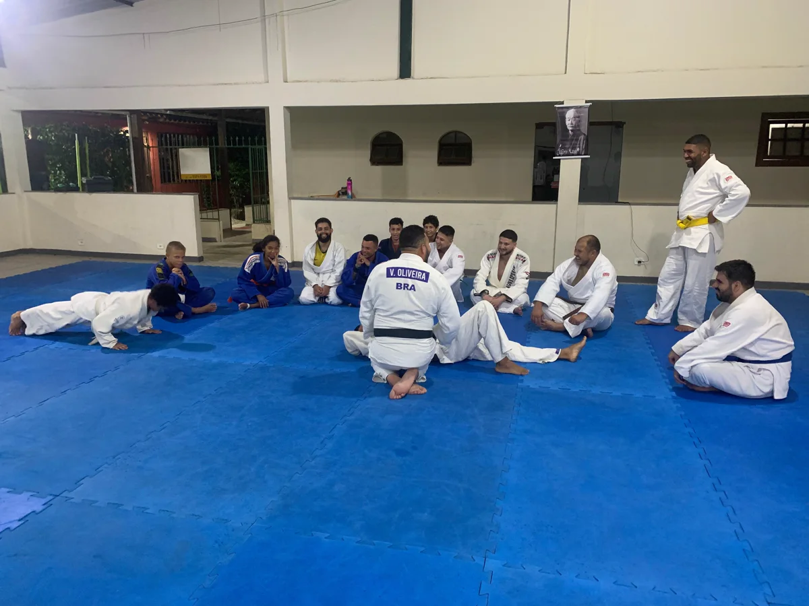
Em 2023 iniciamos, em paralelo, um trabalho em Paraty, apoiando um grupo de judocas que estavam sem sensei. Com o tempo, esse grupo passou a integrar o Judô Clube Solera (JCS), fortalecendo o senso de equipe, pertencimento e continuidade do ensino. Nesse mesmo período, atuamos no Clube do Frade e realizamos a 1ª Copa Solera de Judô, um evento marcante e de grande sucesso. Apesar dos resultados positivos, enfrentamos dificuldades estruturais que nos levaram a buscar novos caminhos para manter o trabalho com dignidade.
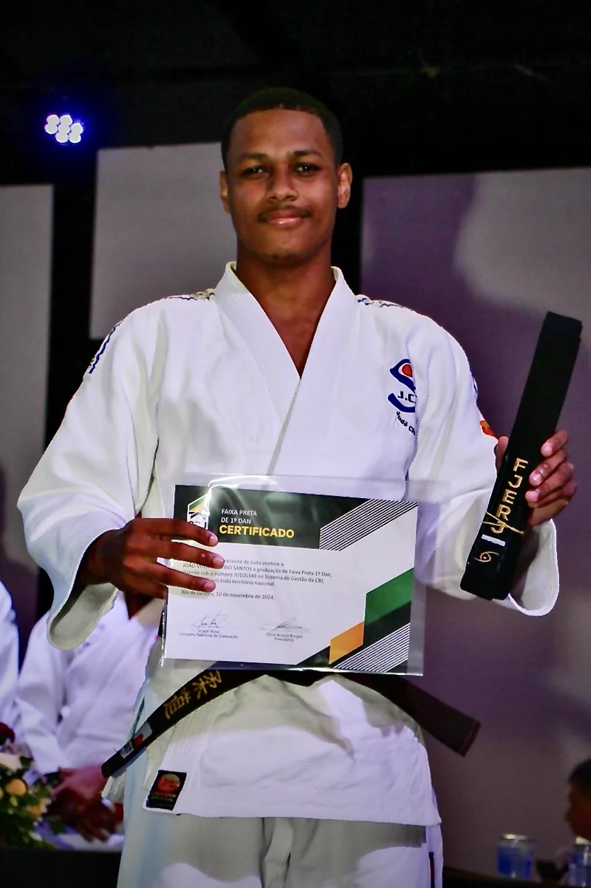
Em 2024 alcançamos um momento histórico: a formação do primeiro faixa preta formado integralmente sob minha orientação, João Vitor Euzébio Santos. Esse marco simboliza um ciclo completo de ensino, acompanhamento e responsabilidade, refletindo o compromisso com a formação sólida e contínua dos alunos.
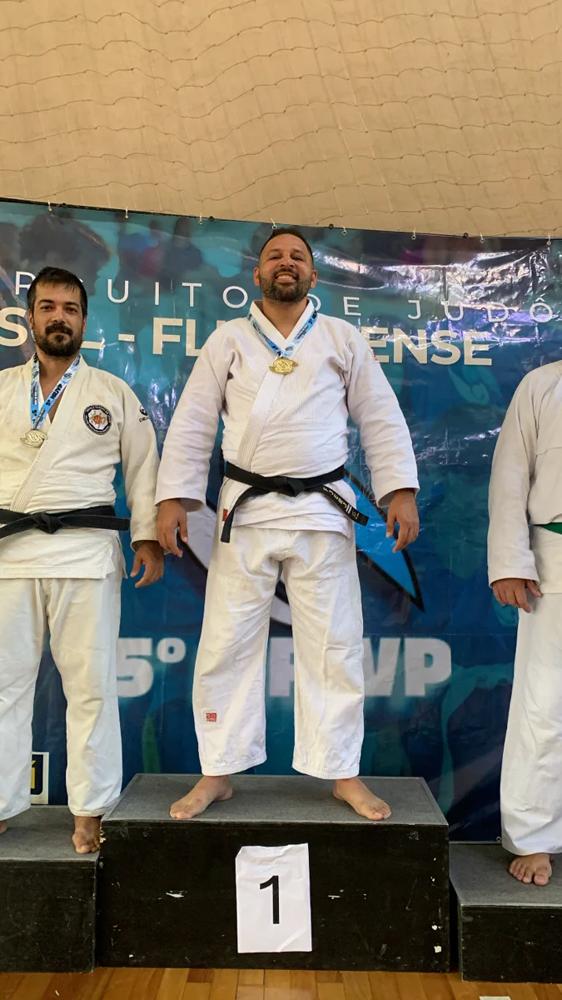
Em 2025, com a perda do espaço no Frade, me mudei para Volta Redonda, onde passei a dar aulas de judô na Academia 63. Esse período faz parte da minha trajetória como professor.
Hoje treino na Equipe de Judô da Prefeitura de Piraí e atuo como árbitro e atleta. No momento, não estou dando aulas.
Minha trajetória reúne o que vivi como professor e minha atuação atual como árbitro e atleta. O respeito que aprendi no judô segue presente no treino e na competição.
O acervo do portfólio de sensei, agora reunido aqui. Abra uma foto para ver em tamanho maior.
As fotos serão carregadas ao entrar no mundo Judô.
Projetos do meu portfólio ligados ao esporte, à organização de competições e à presença digital do judô.
Atuo entre desenvolvimento web, redes de computadores e infraestrutura de telecomunicações — uma combinação que se traduz em software pensado para operar em condições reais.
No dia a dia, transito entre construir sistemas web e operar, monitorar e automatizar redes FTTH/GPON na linha de frente de um NOC/CGR. Essa dupla vivência muda a forma como penso software: considero disponibilidade, integração entre sistemas e o que realmente acontece quando algo falha em produção.
Meu diferencial é fazer diagnóstico e troubleshooting antes de sair escrevendo código — entender o problema de operação para então automatizar e integrar sistemas, reduzindo etapas manuais e aproximando as ferramentas da rotina de quem as usa.
Desenvolvo interfaces e sistemas para quem precisa apresentar um negócio, organizar uma operação ou tirar uma tarefa repetitiva da rotina.
Portfólios, sites institucionais e aplicações com cadastros, painéis e fluxos de trabalho. Penso na navegação, no uso pelo celular e na ligação da interface com os dados.
Nos meus projetos, isso aparece nos sistemas de judô e arbitragem e no CICLO, que reúne cobranças recorrentes e acompanhamento de pagamentos.
Uso Python, APIs REST e webhooks para conectar ferramentas e executar processos: correlacionar eventos, corrigir cadastros e enviar notificações operacionais.
Travapon, BackOffice e monitoramento FTTH mostram essa atuação, da identificação do problema à integração com a rotina da equipe.
Atuo na operação de um NOC/CGR de provedor de internet: monitoramento, troubleshooting e automação de infraestrutura FTTH/GPON. Uso desenvolvimento de software para tornar essa rotina mais rápida, confiável e menos dependente de tarefas manuais.
Projetos organizados por foco: automação de operação e redes, e produtos web completos. Cada um nasceu de um problema real — da rotina de um NOC ao dia a dia de quem usa a ferramenta.
Automação operacional para provedores que integra dados de rede ao Hubsoft, agilizando análise de eventos, criação de ordens de serviço e notificações operacionais.
Ver caseAutomação de um processo anteriormente executado manualmente via Postman, permitindo corrigir inconsistências de cadastro diretamente pelo BackOffice.
Ver case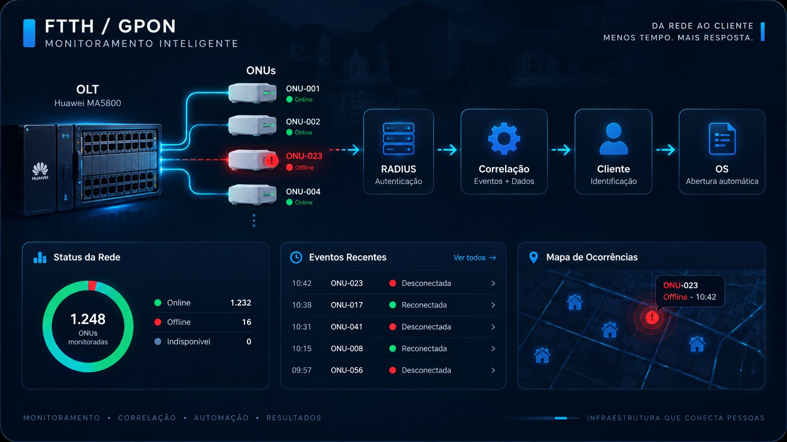
Monitoramento FTTHSistema para identificar eventos de desconexão em redes FTTH e correlacionar informações da OLT, RADIUS e sistemas da operação para reduzir análise manual.
Ver case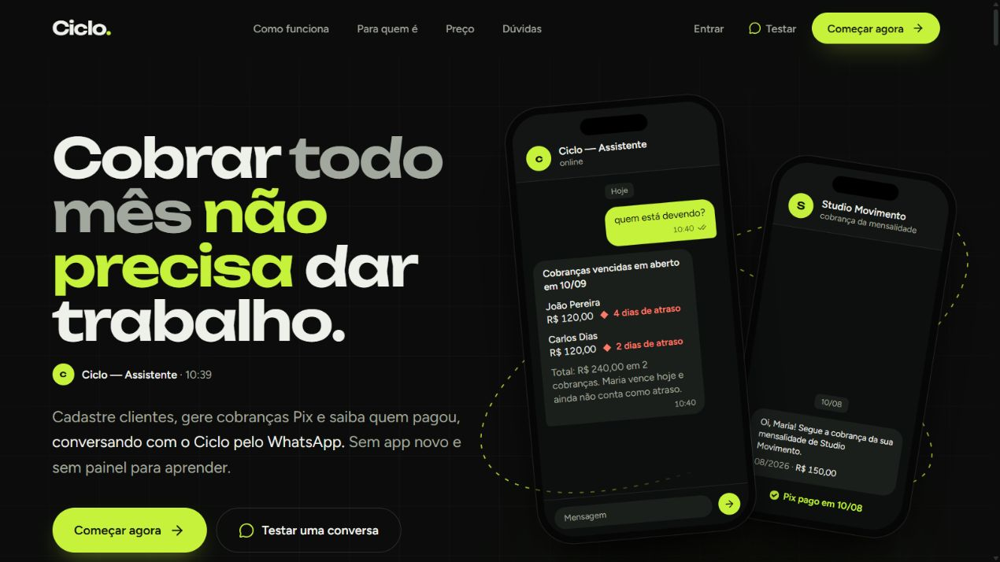
Assistente para cadastrar clientes, gerar cobranças Pix recorrentes e acompanhar pagamentos pelo WhatsApp. Integra a conta Woovi do negócio para receber os pagamentos e confirmar a baixa.
Conhecer o CICLO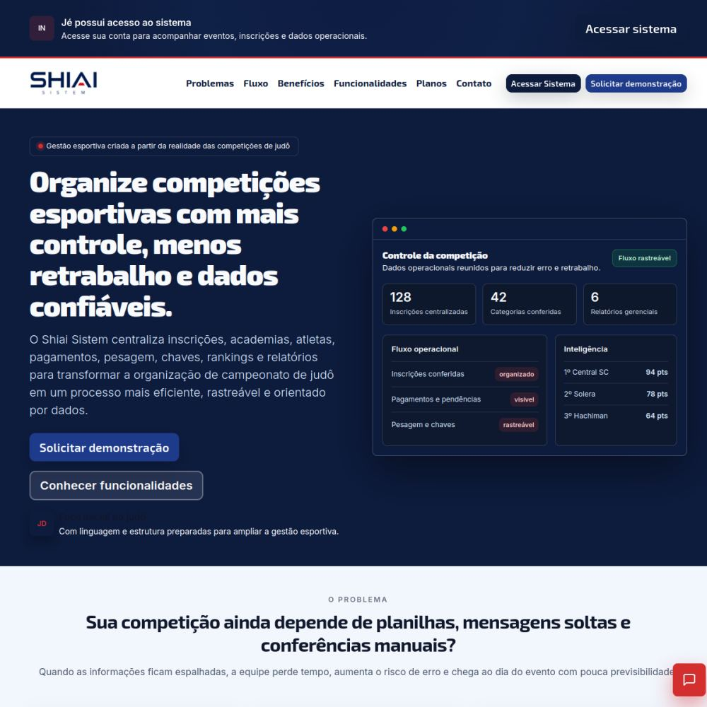
Shiai SistemPlataforma para organização e gestão de competições esportivas, centralizando inscrições, dados de atletas e operação de eventos.
Ver projeto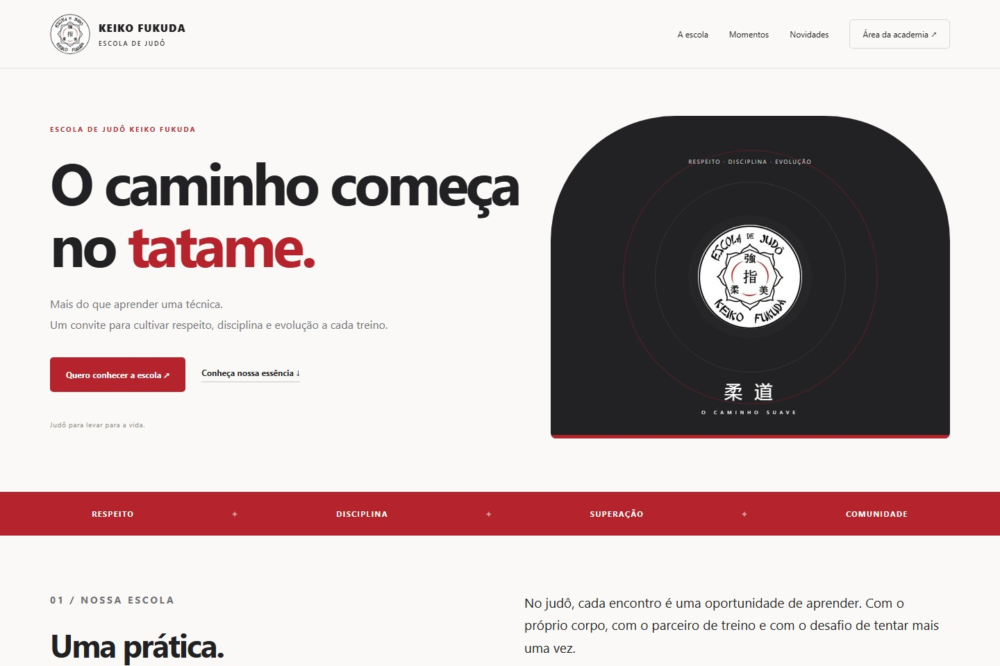
Keiko FukudaPlataforma web desenvolvida para presença digital e organização de informações da Escola de Judô Keiko Fukuda.
Ver projeto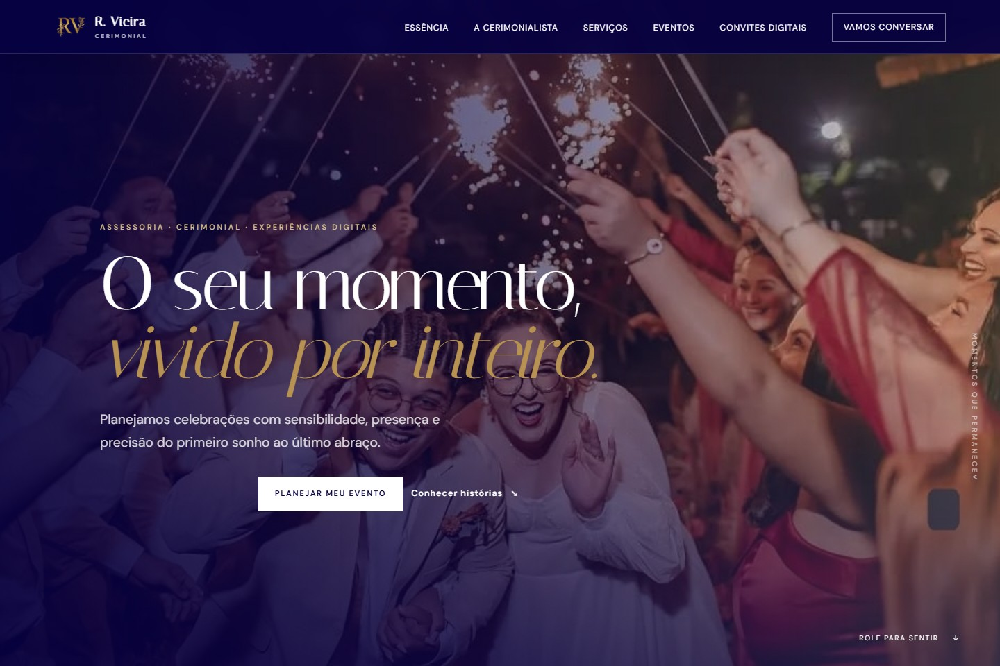
Portfolio RVieiraJavaScript
Ver projeto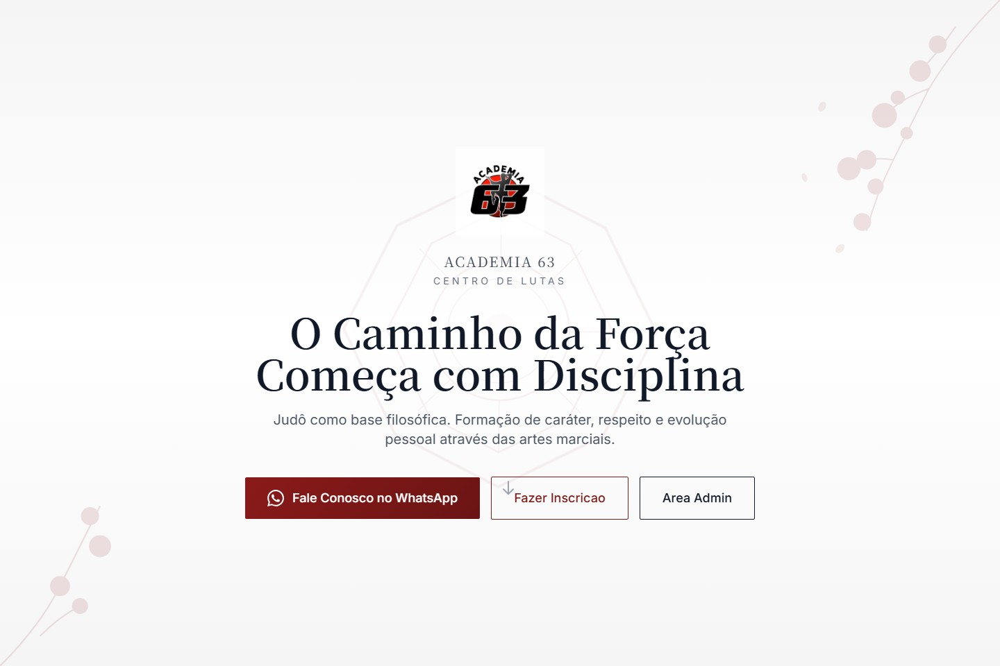
Academia 63JavaScript
Ver projeto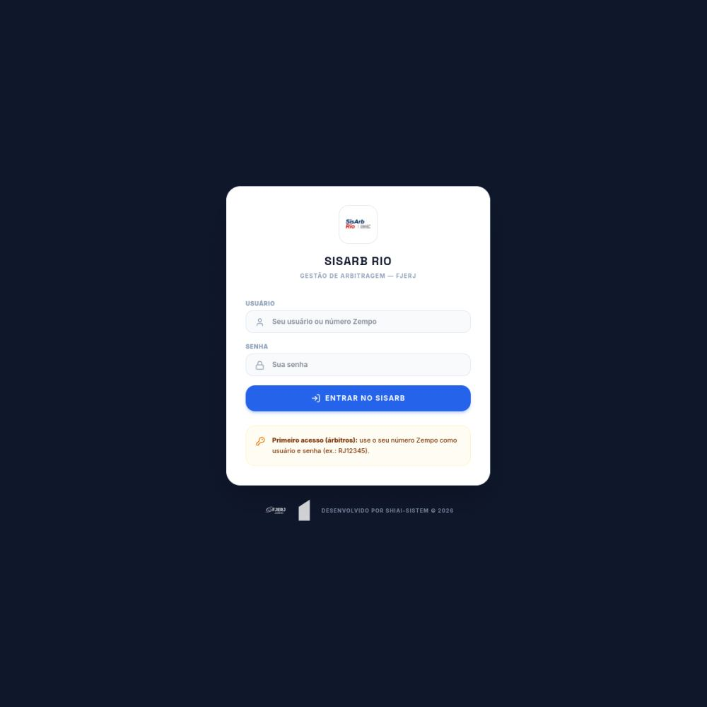
SISARBReact
Ver projeto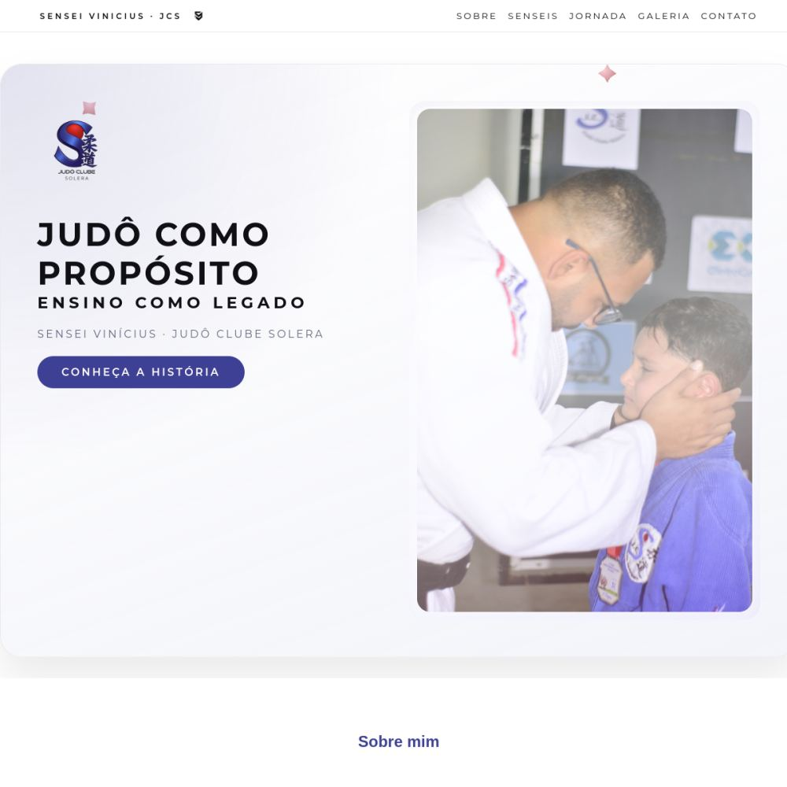
Sensei ViniciusJavaScript
Explorar o mundo Judô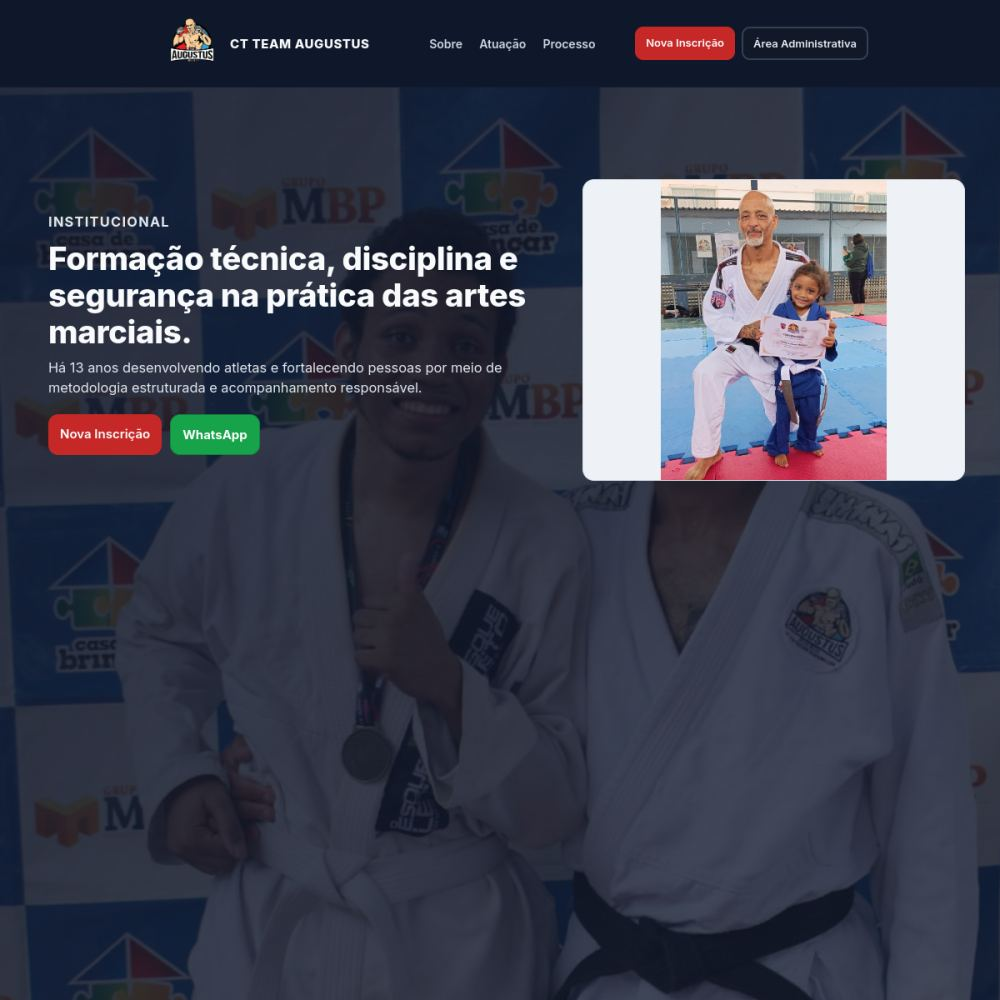
AugustusJavaScript
Ver projetoPara conversar sobre tecnologia, projetos ou minha atuação no judô, entre em contato.
Atuo como árbitro e atleta e treino na Equipe de Judô da Prefeitura de Piraí. Para falar sobre judô, arbitragem ou projetos ligados ao esporte, entre em contato. No momento, não estou dando aulas.
vinnylive1@gmail.comInstagram do Sensei ViníciusProfissional de Tecnologia da Informação com atuação em ambiente de provedor de internet, suporte à operação de redes, análise de incidentes, monitoramento e troubleshooting. Desenvolvo também ferramentas e automações para coleta, tratamento e integração de dados, combinando redes, automação de processos e desenvolvimento web.